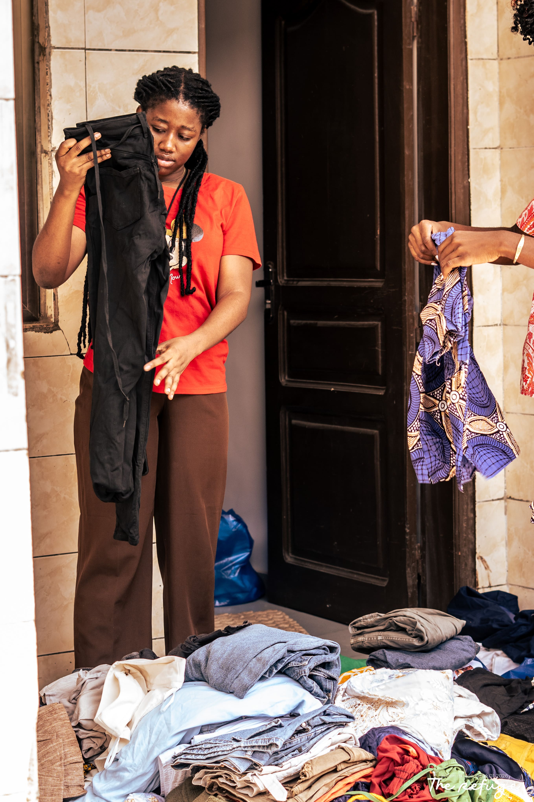
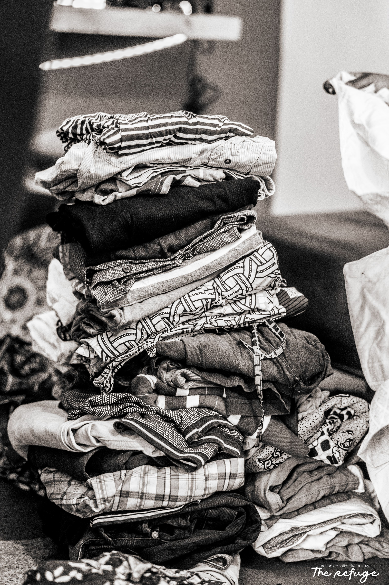
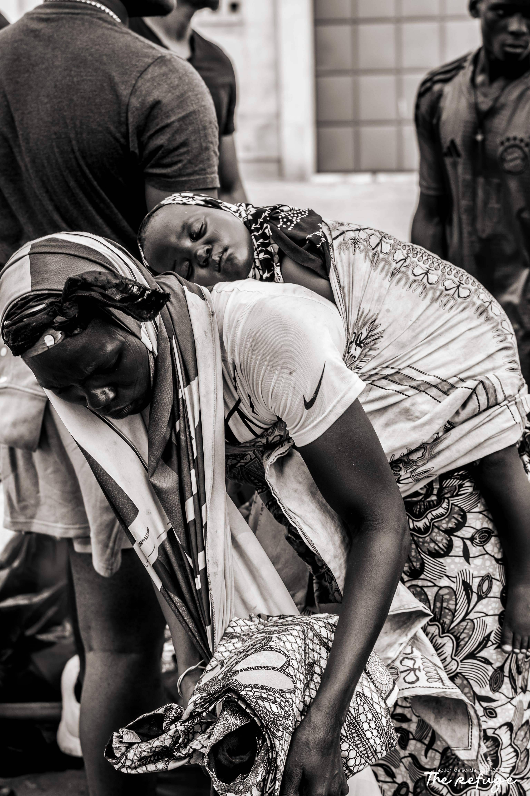
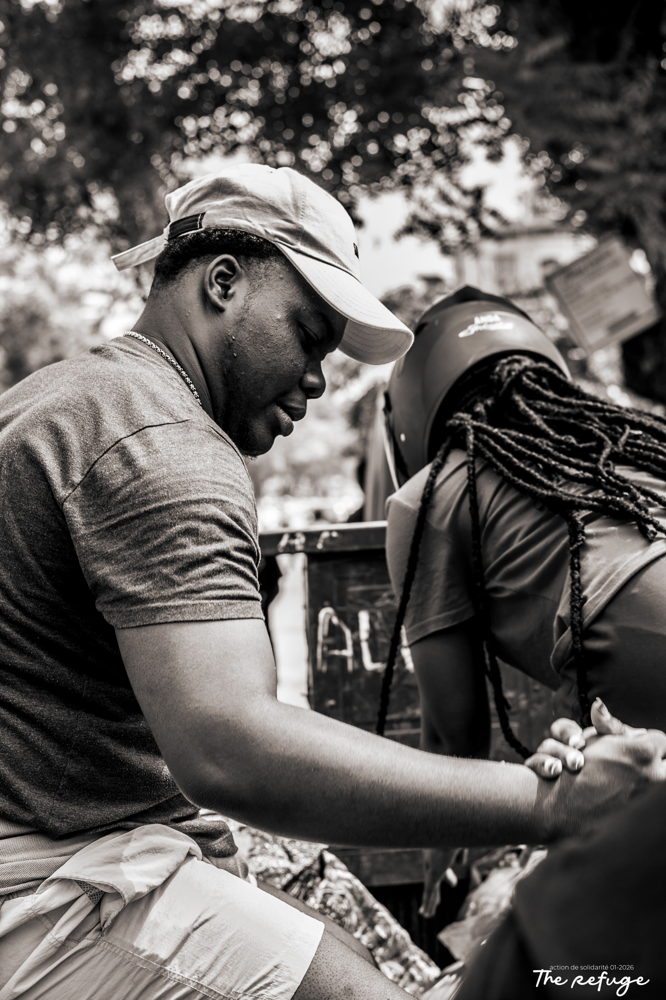
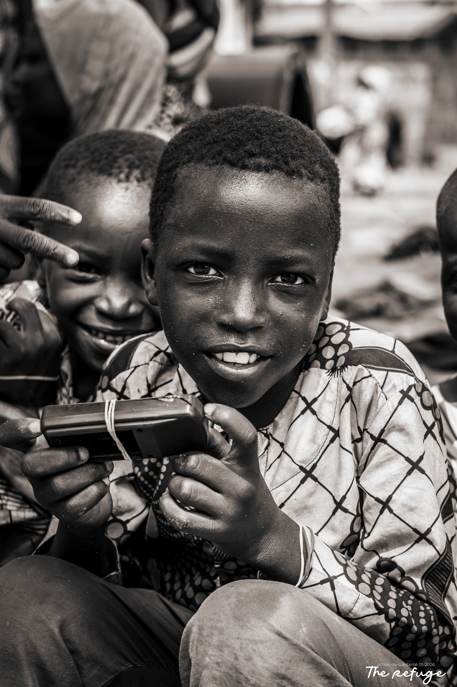
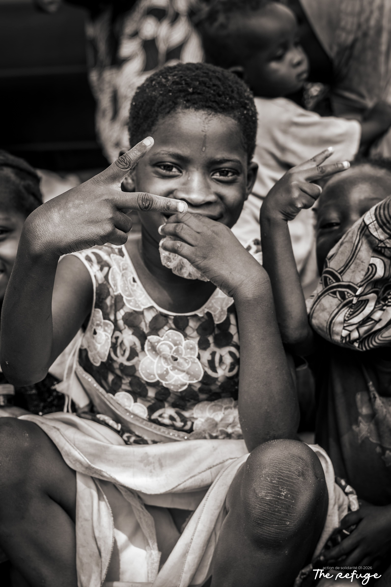

NOTRE HISTOIRE
Une petite graine de foi semée à Cotonou, devenue un refuge pour beaucoup.



LA FONDATION
L'histoire de The Refuge commence en 2024. Frappés par le nombre croissant de personnes sans-abri et d'enfants souffrant de la faim la nuit dans les quartiers centraux de Cotonou, un petit groupe de chrétiens a décidé de ne plus fermer les yeux.
Ce qui n'était au départ qu'une distribution informelle de quelques repas cuisinés à la maison est rapidement devenu une mission structurée. Face à l'immensité des besoins physiques mais aussi au grand besoin d'écoute et de considération, l'association s'est officialisée pour offrir un accompagnement global.
Aujourd'hui, nous continuons de grandir avec la même flamme : être le reflet de l'amour de Dieu pour les plus rejetés.
NOTRE ÉQUIPE
Une équipe pluridisciplinaire et engagée, unie par le service.

Directeur & Co-fondateur

Responsable Logistique & Maraudes

Responsable Écoute & Soutien spirituel

Secrétaire & Relation Partenaires
NOTRE IDENTITÉ SPIRITUELLE
The Refuge est profondément enraciné dans l'Évangile de Jésus-Christ. Notre positionnement est œcuménique et ouvert : nous accueillons et servons chaque être humain sans aucune distinction de religion, d'ethnie ou de parcours de vie.
Nous croyons que l'amour de Dieu n'est pas abstrait, mais qu'il s'est incarné. De la même façon, notre amour pour notre prochain doit se manifester par des actes concrets et quotidiens.
"Mes frères, que sert-il à quelqu'un de dire qu'il a la foi, s'il n'a pas les œuvres ? La foi sans les œuvres est morte."
Jacques 2:14-17
GOUVERNANCE & RIQUEUR
Notre association est gérée par un conseil d'administration bénévole. Aucun membre fondateur ne tire de profit financier de l'action de The Refuge. Tous les dons reçus sont intégralement soumis à un contrôle comptable strict, et nos comptes sont présentés lors de notre assemblée générale annuelle ouverte à tous nos donateurs réguliers.
Nous nous engageons à n'allouer qu'un maximum de 10% de nos ressources globales aux frais administratifs, garantissant que 90% de votre argent sert directement sur le terrain.
Consulter nos rapports d'impact